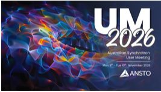
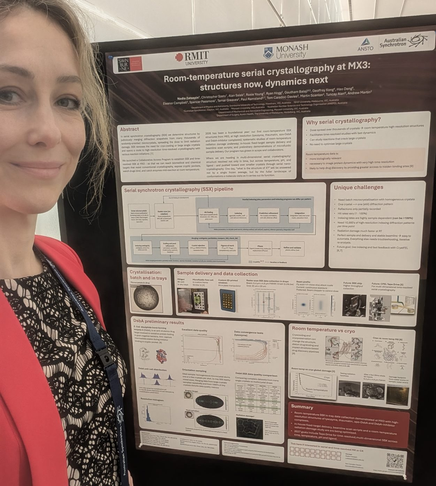
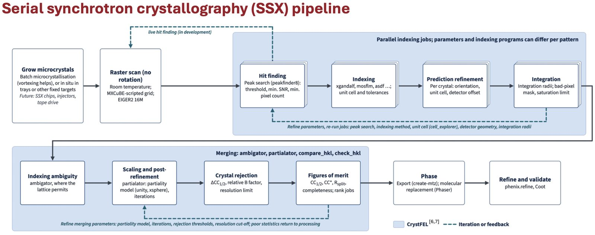
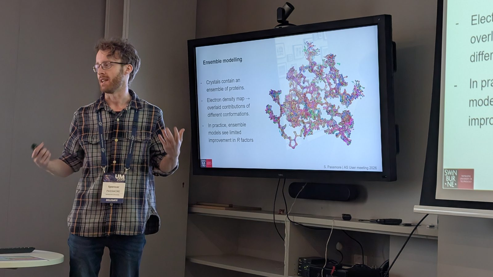
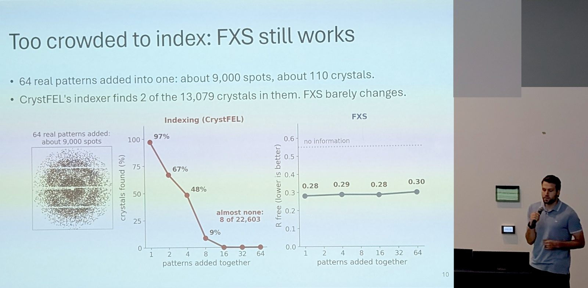
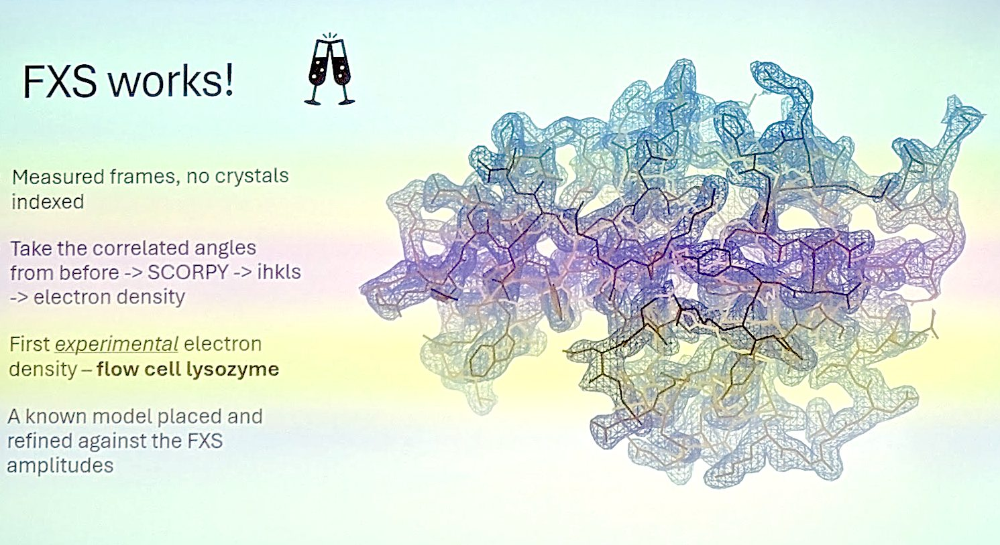

Room-temperature serial crystallography at MX3: structures now, dynamics next
Nadia Zatsepin, Swinburne University
SZETO, Christopher (Swinburne University); SALEK, Alan (RMIT University); YOUNG, Rosie (Australian Synchrotron); HOGG, Ryan (RMIT University); BALAJI, Gautham (Monash University, ANSTO); KONG, Geoffrey (Monash University); DENG, Hao (Department of Mechanical and Aerospace Engineering, Monash University, VIC, Australia); CAMPBELL, Eleanor (Australian Synchrotron); PASSMORE, Spencer (Swinburne University of Technology); GREAVES, Tamar (RMIT University); RAMSLAND, Paul (School of Science, RMIT, Melbourne, VIC, Australia // Department of Surgery, Austin Health, The University of Melbourne, Heidelberg, VIC, Australia); CARADOC-DAVIES, Tom (Australian Synchrotron.); SCANLON, Martin (Monash University); ALAN, Tuncay (Department of Mechanical and Aerospace Engineering, Monash University, VIC, Australia); MARTIN, Andrew (RMIT University)
In serial synchrotron crystallography (SSX) we determine structures by judiciously merging diffraction snap-shots from many thousands of randomly-oriented microcrystals, spreading the dose to limit radiation damage. SSX removes the need for cryo-cooling or large single crystals, and opens a route to high-resolution time-resolved crystallography with various reaction initiations.
We launched a Collaborative Access Program to establish SSX and time-resolved SSX at MX3 - so that we can reach biomedical and chemical targets that resist conventional crystallography, expose cryptic pockets, watch drugs bind, and catch enzymes mid-reaction at room temperature.
2026 has been a foundational year: our first room-temperature SSX structures from MX3, at high resolution -- lysozyme, thaumatin, apo-DsbA and DsbA–inhibitor complexes; systematic studies of room-temperature radiation damage underway; in-house fixed-target sample delivery and beamline scan scripts; and preliminary demonstrations of microfluidic sample delivery. Our program has grown in scope and collaborators.
Where we are heading is multi-dimensional serial crystallography: structure resolved not only in time, but across temperature, pH, and ligand — and pushed toward ever smaller crystals through serial nano-crystallography. One day, “what is the structure of X?” will be answered not by a single frozen average, but by the fuller landscape of conformations a molecule visits as it carries out its function.


Room-temperature serial crystallography of the antivirulence drug target DsbA by in-tray serial crystallography
Chris Szeto, Swinburne University
SALEK, Alan (RMIT University); HOGG, Ryan (RMIT University); RAMSLAND, Paul (School of Science, MIT, Melbourne, VIC, Australia // Department of Surgery, Austin Health, The University of Melbourne, Heidelberg, VIC, Australia); KONG, Geoffrey (Monash University); BALAJI, Gautham (Monash University, ANSTO); SCANLON, Martin (Monash University); MARTIN, Andrew (RMIT University); ZATSEPIN, Nadia (Department of Physics and Astronomy, Swinburne University of Technology, Hawthorn, VIC, Australia)
Antimicrobial resistance is a major and growing cause of death worldwide. Antivirulence agents disarm pathogens without the selective pressure that drives resistance to antibiotics. Bacterial disulfide bond protein A (DsbA) folds virulence factors essential for Gram-negative invasion, so inhibiting DsbA should attenuate virulence without inducing resistance.
Twenty years of structure-guided effort on E. coli DsbA have produced inhibitor candidates that stall pre-clinically. Inhibitor optimisations are guided by cryogenic data, but cryocooling can alter structural conformations [1]. This matters for DsbA as its most promising inhibitor site is a cryptic pocket that opens only when the protein is dynamic [2].
We present the first serial synchrotron crystallography (SSX) structures from the Australian Synchrotron MX3 microfocus beamline. Rastering directly through 96-well MiTeGen in-situ plates gave complete room-temperature (RT) structures of apo E. coli DsbA and hen egg white lysozyme. No micro-crystallisation optimisation, bespoke scripting, or sample handling beyond tray setup was required.
Radiation damage is why cryocooling became standard. SSX spreads dose across thousands of crystals, limiting global damage at RT, but disulfides are damaged roughly 5-fold faster than the bulk structure. Across DsbA datasets collected at 3%, 5%, and 20% transmission, the catalytic disulfide stayed intact even in sodium cacodylate, while an adventitious Cu site at a crystal contact lost density progressively with dose. We also show hot-off-the-press cryo/RT differences in a DsbA-inhibitor complex, and a practical guide to which drops are worth collecting, how many give a complete dataset, and what orientational sampling to expect.
1. Stachowski TR, Fischer M. Nat Chem Biol 2026;22:169–179.
2. Mohanty B et al. Angew Chem Int Ed 2025;64:e202515306.

Optimizing the connectivity of alternate conformations to untangle protein ensemble models
Spencer Passmore, Swinburne University
HOLTON, James (UCSF/LBNL); ZATSEPIN, Nadia (Department of Physics and Astronomy, Swinburne University of Technology, Hawthorn, VIC, Australia); MARTIN, Andrew (RMIT University)
Ensemble modeling offers a means of representing diffraction data collected in X-ray crystallography experiments that can account for the multitude of conformations that proteins realistically occupy inside a crystal. Despite this, ensemble models typically offer only minor reductions in R-free compared to single-conformation representations. It has recently become known that ensemble models introduce a unique kind of local minimum trap to refinement that cannot be avoided or resolved by contemporary approaches. A kind of connectivity issue, these traps frequently manifest as locally strained geometries in distant parts of the structure, and thus are rarely apparent from inspection. Here, we present a method to escape these traps by finding the energy-minimizing assignment of conformation labels to the alternate locations (altlocs) of atoms, thereby relieving geometric strain without changing the model structure factors. The efficacy of the method is demonstrated by application to a previously published synthetic dataset that traps modern refine-
ment software. When applied to real data, the approach is shown to improve Rfree and geometry validation metrics over controls. Applying this method in combination with conformation-aware water-picking to a deposited dataset for a 19 kDa protein, we produce a 0.77 Å 6-conformation model with R-work/R-free values of 4.7%/6.4%.
https://www.biorxiv.org/content/10.64898/2026.09.17.752399v2.abstract

Fluctuation X-ray scattering as an indexing-free extension of serial crystallography
Alan Salek, RMIT University
SZETO, Christopher (Department of Physics and Astronomy, Swinburne University Of Technology, Hawthorn, VIC, Australia); PASSMORE, Spencer (Swinburne University of Technology); YOUNG, Rosie (Australian Synchrotron); CARADOC-DAVIES, Tom (Australian Synchrotron.); WANICEK, Emma (School of Science, RMIT, Melbourne, VIC, Australia); HOGG, Ryan (RMIT University); DENG, Hao (Department of Mechanical and Aerospace Engineering, Monash University, VIC, Australia); ALAN, Tuncay (Department of Mechanical and Aerospace Engineering, Monash University, VIC, Australia); RAMSLAND, Paul (School of Science, RMIT, Melbourne, VIC, Australia // Department of Surgery, Austin Health, The University of Melbourne, Heidelberg, VIC, Australia); ZATSEPIN, Nadia (Department of Physics and Astronomy, Swinburne University of Technology, Hawthorn, VIC, Australia); MARTIN, Andrew (RMIT University)
Serial synchrotron crystallography solves structures by merging tens of thousands of individually indexed microcrystal patterns. When many crystals are illuminated at once, the resulting “spotty powder” patterns cannot be indexed and are discarded. Fluctuation X-ray scattering instead exploits angular correlations between Bragg peaks within each pattern, offering a route to structure factors from data which current pipelines cannot use [1]. This would permit denser crystal loading, smaller crystals well-below previous limits (<100 nm), simpler in-tray collection, and shorter mixing times in time-resolved experiments.
We present the first experimental demonstration of fluctuation scattering from serial crystallography data, benchmarked directly against conventional merging using a single thaumatin dataset collected at room temperature. Data were collected at MX3 (EIGER2 XE 16M, 13 keV) from room-temperature microcrystals in in-situ plates, using fixed-target scripts we developed at the beamline. Of ~230,000 frames, ~73,000 were hits and ~66,000 indexed (90%), merging in P4₁2₁2 to 100% completeness at 1.65 Å with exceptional multiplicity. These data refine to R/R-free 0.164/0.189, a rigorous reference against which correlation-based recovery can be validated. We computed angular correlations from Bragg peaks in both indexable and non-indexable multi-crystal patterns and assessed the recoverable signal against simulated thaumatin data. We report the practical requirements such as peak statistics, angular sampling, correlation convergence, and describe the 3D-printed fixed-target holder and microfluidic flow cell [2] we are developing. This establishes a controlled testbed for extending the approach to nanocrystals at synchrotron sources.
1. Adams, P. et al. IUCrJ 11, 2024.
2. Deng, H. et al. Phys. Fluids 37, 2025.
Fluctuation Scattering Techniques at the Australian Synchrotron
Andrew Martin, RMIT University
PAPORAKIS, Stefan (RMIT); HASSETT, Michael (RMIT University); HOGG, Ryan (RMIT University); WILLIAMS, Tahlia (Department of Physics, School of Science, RMIT University, Melbourne, Victoria 3000, Australia); PASSMORE, Spencer (Swinburne University of Technology); SZETO, Christopher (Swinburne University); RAMSLAND, Paul (School of Science, RMIT, Melbourne, VIC, Australia // Department of Surgery, Austin Health, The University of Melbourne, Heidelberg, VIC, Australia); GREAVES, Tamar (RMIT University); ZATSEPIN, Nadia (Department of Physics and Astronomy, Swinburne University of Technology, Hawthorn, VIC, Australia)
Beamlines with microfocus or nanofocus beams commonly offer scanning diffraction capabilities for mapping, serial crystallography or ptychographic imaging. An emerging use of these beamlines is for fluctuation or correlation analysis, where scanning diffraction data is processed to extract statistical information from the scan region. Fluctuation analysis methods aim to probe structure and disorder with a view to accessing structural information beyond that provided by established techniques like SAXS or Power Diffraction.
Here we present the results of fluctuation analysis experiments at the Australian Synchrotron from the SAXS, XFM and MX beamlines. We focus on the real-space information that can be extracted via the pair-angle distribution function (PADF)[1] and via novel crystallographic approaches[2]. The PADF delivers local angular structural information, beyond the pair distance information provided SAXS or powder diffraction experiments. We have applied the PADF technique to lyotropic liquid crystals[3,4], thermotropic liquid crystals, protein crystals and metal-organic frameworks. In each case, the PADF is sensitive to structural disorder beyond the ideal lattice information. In the case of liquid crystals, in particular, our results indicate the sensitivity of the PADF to lattice strain, preferred orientation and molecular stacking in the liquid crystalline phase. The feasibility of these methods at multiple beamlines of the Australian Synchrotron opens up many
opportunities for new detailed characterisations of order and structure on the nanoscale.
1. A.V. Martin et al. J. Appl. Cryst. (2024) 57, 877.
2. P. Adams et al. IUCrJ (2024) 11, 538.
3. A.V. Martin et al, Commun. Mater. (2020) 1, 40.
4. J. Binns et al., IUCrJ (2022) 9, 231.
